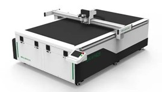

18% MERMA REDUCTION

| Parámetro Técnico | Detalle de Ingeniería |
|---|---|
| Potencia del Tubo Láser | 110W (Tubo de vidrio CO2 de larga vida útil) |
| Vida Útil del Tubo | 8,000 - 10,000 horas (Bajo condiciones óptimas) |
| Sistema de Control | DSP Ruida 6445 (Estabilidad industrial) |
| Motores de Movimiento | Paso a paso trifásicos de alta resolución |
| Transmisión | Bandas síncronas reforzadas con alma de acero |
| Lente Focal | Seleniuro de Zinc (ZnSe) importado (Alta transmitancia) |
| Sistema de Aire | Bomba de asistencia de aire para evitar flamas |
| Voltaje de Operación | 220V AC / 60Hz / 15A |
| PARÁMETRO CRÍTICO | L6250 SIC-B1650W110 |
QUILTER QY-IIIF1922 | CUCHILLA IGR-1625 |
|---|---|---|---|
| ÁREA DE TRABAJO | 1.6430m | 1800x200m Area | 18,000 PM |
| POTENCIA | 110W CO2 | 1100 CO2 | 2500 BPM |
| VELOCIDAD DE PUNTADA | 2500 CPM | 2500 RPM | 18,000 knife |
| SOFTWARE DE CONTROL | DSP Ruida | DSP Ruida | DSP Ruida |
| CARACTERÍSTICAS DE SEGURIDAD | Panasonic Servomotors | Panasonic Servomotors | Panasonic Servomotors |
| SOPORTE POST-VENTA | Soporte Post-venta | Soporte Post-venta | Maife |
| CERTIFICACIONES CLAVE | TRIPLE-PHASE PANASONIC | TRIPLE-PHASE SERVOMOTORS | FDA LENA ES STEPPERS |